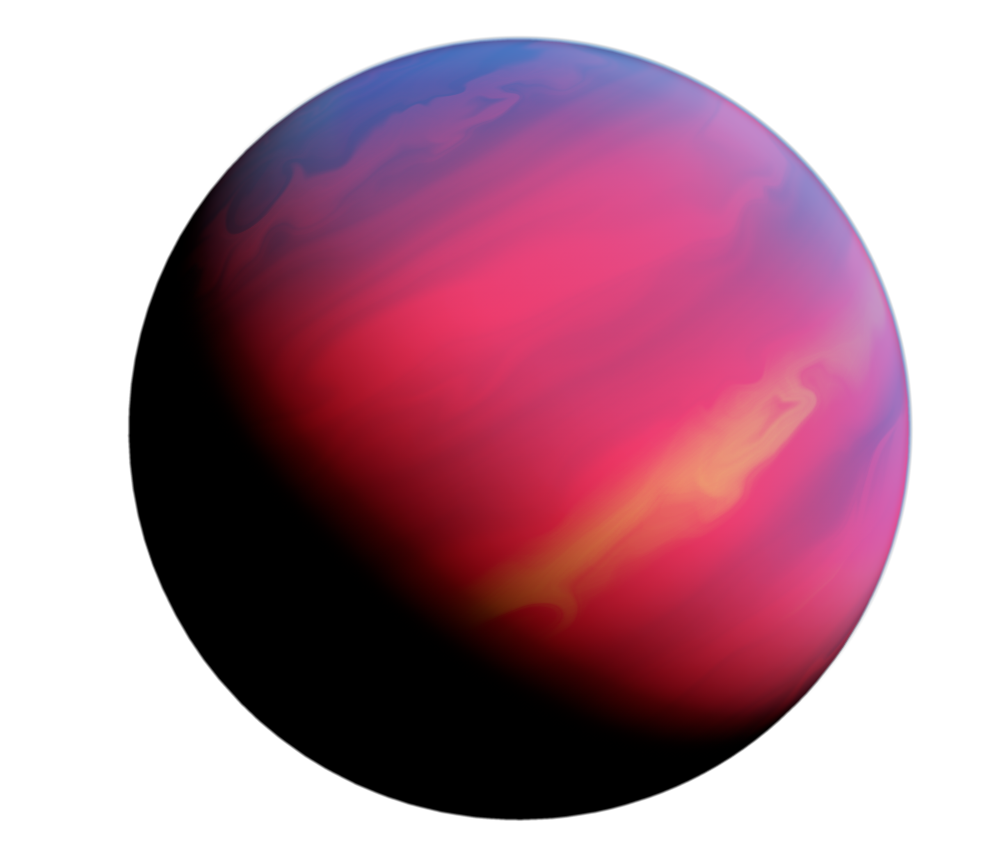
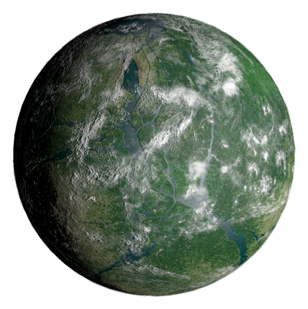

The Andalu Cluster
The Andalu Cluster
is nearly an untouched frontier, a grouping of potentially
settleable star systems on the far edge of the Daijax Nebula
. Unlike the other major systems in Region
Twelve
,
the Andalu Cluster
is made up of several small burning stars once formed within the greenish blue Daijax
Nebula
,
each of which now sit just outside of the soupy veil.
Space debris is also frequently churned out of the nebula, making travel through the Andalu
Cluster
particularly
dangerous. In addition to creating space navigation difficult, this steady flow of rock and ice will
often
collide with the planets within the Andalu Cluster
, leaving pockmarks and craters behind.
Ryne, Andalu's First Star
Ryne I:
A massive purple gas giant, remarked for the beautiful patterns that ripple across its
surface.
Ryne II:
A small volcanic world with ashen skies. Wide rivers of molten lava and eternally burning
forests make this an especially inhospitable environment. A few elevated platforms were built above
the
fiery
world early during the>
Empire's
occupation of Sector Twelve as Walker production sites. The effort
was
quickly
abandoned however, as transporting the manufactured AT-ATs, AT-STs, and other Imperial hardware
through the
treacherous Andalu Cluster
became too costly.
The toxic atmosphere is unsafe to breathe for long periods of time, making oxygen regulation masks a
necessity
whilst out in the elements.
Voxes, Andalu's Second Star
Voxes I:
A large world with foreboding forests. The trees of Voxes I
are so massive, they completely
blot
out any light from reaching the forest floor far below, creating a perma-night for the nocturnal
creatures
that
consider the dark forest home.
Smugglers
and small exploration operations have been known to make the large treetops home,
balancing large
wooden landing pads between the tree's mighty branches.
Nilline, Andalu's Third Star
Nilline I:
An oblong conglomerate of ice and stone, formed centuries ago within the Daijax Nebula
and
now
locked in orbit around the star of Nilline
. A few independant outposts have been set up on Nilline
I
, as the
nearby nebula is seen as a source of virtually untapped natural resources. Precious minerals within
Nilline
I
, as well as some often found exiting the nebula, are mined for their worth and dispersed throughout
Sector Twelve
.
Nilline II:
A dark world, with twilight skies. Bioluminescent growth creeps out of deep crevices,
which
open up into massive caves far below the planetary surface. Deep dwellers, such as massive space
slugs, are
rumored to reside within the rocks of Nilline II
.
Potential Roleplaying Opportunities:
The Andalu Cluster
offers a potentially great reward, for
those
willing to take a great risk. Alternatively, pirates and wanted criminals have long fled to
Andalu
,
hiding
towards the edge of the Daijax Nebula
behind the field of asteroids and debris. Those seeking the
elusive
Kiida
System
and the pilgrimage site of the Jedi Wanderers
must also brave their way through the Andalu
Cluster
,
to
the edge of the Daijax Nebula
, to where a Jedi Wayfinder
can plot their course through to the system
on the
other side. For Jedi
hopefuls hoping to get their hands on one of the limited Wayfinders
, this is as
good of
a
place to start their search as any.